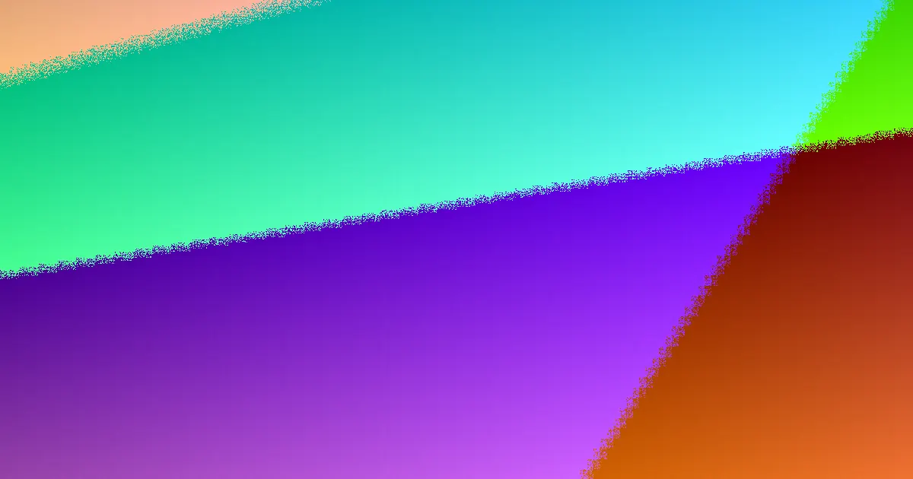

The practical Noosa lesson is that material choice should follow the site before price is judged. The parent guide names six work types: Colorbond, timber, pool, aluminium slat, rural fencing and gates. Coastal salt air and wind suit Colorbond or aluminium slat near Noosa Heads to Marcoola; established hinterland streets often suit timber; acreage around Doonan, Eumundi and Kin Kin points to rural fencing. Pool barriers sit outside normal boundary logic because safety inspection applies.
For local buyers, fencing services noosa materials compared grounded in the published Noosa property guide and Queensland dividing fence timing noted there
Fencing Services Noosa Materials Compared Explained
A material shortlist becomes useful only after the block is read properly. The parent guide separates beachfront weather from hinterland streets and acreage runs, which is why a single metre rate rarely tells the story. For fencing services noosa readers, the sharper question is what the fence must survive and what it must define.
- Beachfront strip: salt air and wind push attention toward Colorbond or aluminium slat.
- Established hinterland streets: timber is described as a natural fit, including shared dividing fences.
- Acreage boundaries: rural fencing around Doonan, Eumundi and Kin Kin is more about length, strain and access than a neat residential finish.
- Pool areas: treat the barrier as its own safety pathway, not as an ordinary neighbour fence.
Those are starting points rather than verdicts. A front screen may need airflow and street presentation; a rear boundary may need privacy and agreement; a driveway gate adds automation and clearance questions that can outweigh the panel choice.
What makes two quotes hard to compare
Two estimates can name the same product and still describe different jobs. The guide flags ground conditions, exposure, corners, returns, gates, hard to reach boundaries, removal and disposal as items that move the real cost. Coastal sand, riverfront alluvium and hinterland clay are listed as soils that dig and hold posts differently.
The useful habit is to make assumptions visible before discussing price. Ask each contractor to state post specification, footing assumptions, gate treatment, old fence removal, disposal and making good after posts come out. If access is tight, vegetation is overgrown or old concrete is buried, the allowance should appear in writing rather than surface later as a variation.
The guide also describes its estimator as a planning range, not a site measure or fixed offer. Treat any calculator output as a prompt for better questions, then test the brief against the actual line, the shared sections and the compliance triggers.
Who this materials angle suits
This angle is most useful for owners still shaping the brief: a shared boundary, coastal block, pool area, front screen, corner lot, retaining wall, driveway gate or rural boundary. It is less useful for a buyer who already holds a surveyed line, chosen material, neighbour consent and a detailed written scope.
The dividing fence process matters where the line is shared. Queensland guidance referred to in the parent page allows one month to reach agreement after notice, then a possible QCAT application within two months. Where one owner wants more than sufficient, such as premium material, extra height or a preferred finish, that owner covers the difference. Keep the record factual: line, height, material, quote, contribution share and what counts as an upgrade.
A brief that survives site measuring
A strong brief converts vague intent into comparable scope. Mark the existing fence, show the proposed line, note shared sections, and list anything that blocks removal such as old posts, concrete, vegetation or narrow access. Split boundary fencing, front screens, pool barriers, rural runs and gates so each approval question stays clear.
- Record purpose first: privacy, airflow, presentation, pool safety or boundary definition.
- Match material to microclimate: salt wind, sheltered street or acreage strain.
- Write removal, disposal and making good into every quote request.
- Flag pool proximity, retaining walls, combined height and sight lines before colour is chosen.
- Compare assumptions, not only rate: posts, footings, returns, gates, access and exclusions.
If the answers stay messy, pause before paying a deposit. The material can be right while the job is still poorly defined.
- Map the line. Photograph the old fence, shared corners, retaining edges and anything that will complicate removal.
- Name the job. Separate boundary, pool, front, rural and gate work so materials are not bundled into one vague rate.
- Test exposure. Match Colorbond, aluminium slat, timber or rural fencing to salt wind, sheltered streets or acreage strain.
- Lock assumptions. Require posts, footings, gates, disposal, access limits and exclusions in each written quote.
- Confirm compliance. Check neighbour process timing and pool barrier inspection before work is booked.
| Scope | Guide fit | Main check before quoting |
|---|---|---|
| Beachfront boundary | Colorbond or aluminium slat for salt air and wind | Exposure assumptions, fixings and access |
| Established hinterland street | Timber, including shared dividing fence use | Neighbour agreement, height and finish |
| Acreage run | Rural fencing around Doonan, Eumundi and Kin Kin | Length, strain, gates and vehicle access |
| Pool barrier | Separate safety pathway | Licensed pool safety inspector confirmation |
| Front screen or gate | Presentation, airflow and automation needs | Sight lines, clearance and combined height |
Common questions
Is Colorbond always best near the beach? The guide presents Colorbond and aluminium slat as suited to salt air and wind along the Noosa Heads to Marcoola strip, but suitability still depends on the run, fixings, gate detail and whether the line is shared. A sheltered yard can make timber reasonable even in the same suburb.
Why can the same material produce different quotes? Soil, exposure, corners, returns, access, removal and disposal change the labour even when the panel or palings match. Coastal sand, riverfront alluvium and hinterland clay are named as ground types that hold posts differently, so footing assumptions should be written down.
What should happen before a dividing fence notice? Document the proposed work and obtain at least one quote, then discuss line, height, material and contribution with the adjoining owner. The referred process notes one month to reach agreement after notice and a possible QCAT step within two months; treat that as general guidance rather than legal advice.
General information for Noosa property owners comparing fence materials, scope and quoting; not legal, council or safety advice.